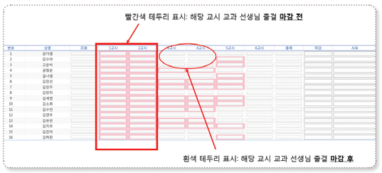

1학년 출석부 기재 및 관리
학급별 출석부에 해당 교시 교과 담당 교사가 표기함.
2, 3학년 출석부 기재 및 관리
교과 담당 교사
수업별 이동 출석부를 보조장부로 이용함.
이동 수업이 아닌 경우에는 학급별 출석부에 출결 기록함.
매시간 수업 종료 후 (이동 수업만 해당함): 나이스> 학적> 출결관리>‘교과시간별출결등록’에서 [출결마감] 함.
담임교사
학급별로 출석부를 관리함.
교과 담당 교사가 나이스 출결 마감을 한 이후 담임교사는 나이스> 학적> 출결관리> ‘일일 출결 관리(담임용)’에서 학급 학생들의 출결 상황을 확인한 후 [출결마감] 함.
교과 수업을 제외한 조회, 종례, 창체 활동 등의 출결은 담임교사가 학급 출석부에 기재하고 나이스에도 입력함.
이동 교과의 경우에는 담임교사가 학급 출석부에 기재하고 나이스에도 입력함.
결석계철 정리 방법
월별 마감 완료 후
출결 현황 및 통계 > 학급별 출결 현황 > 해당 월 출결 현황 학급별 출력 > 학생 확인 서명 > 결석계철 첨부
출결 관리 > 출석부 출력(담임용) > 해당 월의 주별로 출력 > 결석계 철 첨부
나이스 화면상의 출결 마감 여부 확인방법

빨간색 테두리로 표시 → 교과 담당 교사 출결 마감 전
흰색 테두리로 표시 → 교과 담당 교사 출결 마감 완료